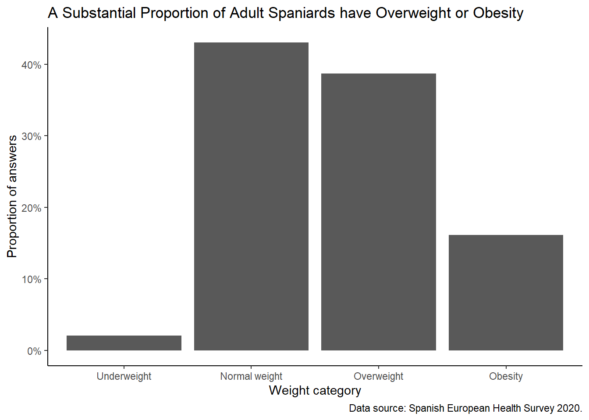
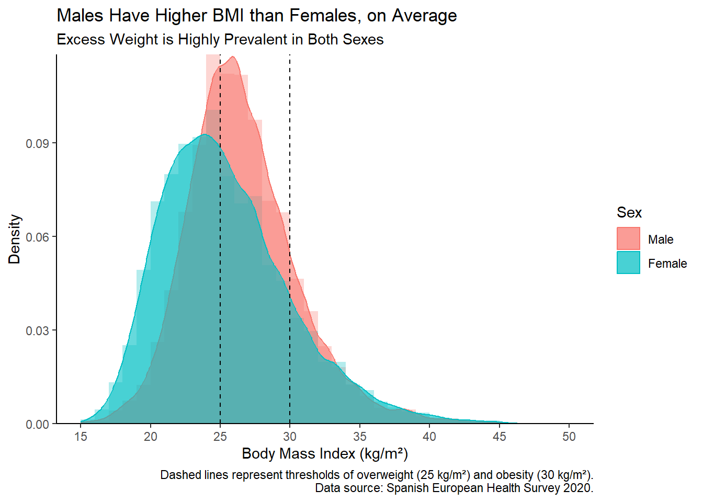

pacman::p_load(
tidyverse,
scales
)Load Data from the National Health Survey Spain 2020
R
importing
data cleaning
ggplot2
tidyverse
health
A step-by-step guide to loading, cleaning, and visualizing data from the National Health Survey Spain 2020 using R.
Introduction
In this post, we will load, clean, and visualize data from the National Health Survey Spain 2020. This dataset provides valuable insights into the health status of the Spanish population, including information on age, sex, region, height, and weight.
Information about the Health Survey can be found on the official page of the Spanish Health Ministry. The data can be downloaded from this webpage.
Load Libraries
First, we load the necessary libraries.
Import Data
We will import the data from a fixed-width file (MICRODATOS_PUBLICACION_CADULTO.txt) and focus on the columns for age, sex, region, height, and weight.
file_2020 <- "MICRODATOS_PUBLICACION_CADULTO.txt"
# Read using read_fwf
data_raw <- read_fwf(
file_2020,
col_positions = fwf_cols(
sex = c(13, 13),
age = c(14, 16),
region = c(1, 2),
height = c(369, 371),
weight = c(372, 374)
),
col_types = "iiiii", # set all columns as integers
na = c("998","999") # Missing values encoded as 998 (doesn't know) or 999 (doesn't answer)
)
glimpse(data_raw)Rows: 22,072
Columns: 5
$ sex <int> 1, 2, 1, 2, 1, 2, 2, 2, 1, 2, 2, 1, 1, 2, 2, 1, 2, 1, 2, 2, 1, …
$ age <int> 60, 87, 38, 43, 41, 34, 60, 79, 87, 82, 77, 44, 47, 16, 48, 25,…
$ region <int> 16, 16, 16, 16, 16, 16, 16, 16, 16, 16, 16, 16, 16, 16, 16, 16,…
$ height <int> 175, NA, 174, 164, 169, 167, 159, 150, 178, NA, 155, 184, 181, …
$ weight <int> 74, NA, 80, 58, 74, 90, NA, 73, 72, 64, NA, 86, 85, 56, 67, 87,…Clean Data
Next, we clean the data by converting the sex and region columns to factors, calculating the Body Mass Index (BMI), and categorizing the BMI values.
data_clean <- data_raw |>
mutate(
sex = factor(sex, labels = c("Male", "Female")),
region = factor(region, labels = c("Andalucía", "Aragón", "Asturias, Principado de", "Balears, Illes", "Canarias", "Cantabria", "Castilla y León", "Castilla - La Mancha", "Cataluña", "Comunitat Valenciana", "Extremadura", "Galicia", "Madrid, Comunidad de", "Murcia, Región de", "Navarra, Comunidad Foral de", "País Vasco", "Rioja, La", "Ceuta", "Melilla")),
bmi = weight / (height/100) ^ 2,
bmi_cat = case_when(
bmi < 18.5 ~ "Underweight",
bmi >= 18.5 & bmi < 25 ~ "Normal weight",
bmi >= 25 & bmi < 30 ~ "Overweight",
bmi >= 30 ~ "Obesity"
),
bmi_cat = fct(bmi_cat, levels = c("Underweight", "Normal weight", "Overweight", "Obesity"))
)
glimpse(data_clean)Rows: 22,072
Columns: 7
$ sex <fct> Male, Female, Male, Female, Male, Female, Female, Female, Male…
$ age <int> 60, 87, 38, 43, 41, 34, 60, 79, 87, 82, 77, 44, 47, 16, 48, 25…
$ region <fct> "País Vasco", "País Vasco", "País Vasco", "País Vasco", "País …
$ height <int> 175, NA, 174, 164, 169, 167, 159, 150, 178, NA, 155, 184, 181,…
$ weight <int> 74, NA, 80, 58, 74, 90, NA, 73, 72, 64, NA, 86, 85, 56, 67, 87…
$ bmi <dbl> 24.16327, NA, 26.42357, 21.56454, 25.90946, 32.27079, NA, 32.4…
$ bmi_cat <fct> Normal weight, NA, Overweight, Normal weight, Overweight, Obes…Visualize Data
We will create two visualizations: a bar plot showing the proportion of different weight categories, and a combined histogram and density plot to visualize the BMI distribution by sex.
# Bar plot of weight categories
data_clean |>
filter(!is.na(bmi_cat)) |>
ggplot(aes(x = bmi_cat, y = after_stat(prop), group = 1)) +
geom_bar() +
theme_classic() +
scale_y_continuous(labels = label_percent()) +
labs(
x = "Weight category",
y = "Proportion of answers",
title = "A Substantial Proportion of Adult Spaniards have Overweight or Obesity",
caption = "Data source: Spanish European Health Survey 2020."
)
# Histogram and density plots by sex
data_clean |>
ggplot(aes(x = bmi, fill = sex)) +
geom_histogram(
aes(y = after_stat(density)),
breaks = seq(10, 70, 1),
position = "identity",
alpha = 0.3) +
geom_density(aes(color = sex), alpha = 0.6) +
geom_vline(aes(xintercept = 25), linetype = "dashed") +
geom_vline(aes(xintercept = 30), linetype = "dashed") +
scale_y_continuous(expand = c(0, 0)) +
scale_x_continuous(
limits = c(15, 50),
breaks = seq(15, 50, 5)
) +
theme_classic() +
labs(
y = "Density",
x = "Body Mass Index (kg/m²)",
fill = "Sex",
color = "Sex",
title = "Males Have Higher BMI than Females, on Average",
subtitle = "Excess Weight is Highly Prevalent in Both Sexes",
caption = "Dashed lines represent thresholds of overweight (25 kg/m²) and obesity (30 kg/m²).\nData source: Spanish European Health Survey 2020."
)
Plot Interpretation
Bar Plot of Weight Categories
The bar plot shows the proportion of individuals in each weight category (Underweight, Normal weight, Overweight, Obesity).
- Overweight and Obesity Prevalence: The plot highlights that a substantial proportion of the adult Spanish population falls into the overweight or obese categories.
- Public Health Concern: This high prevalence of overweight and obesity indicates significant public health concerns, as these conditions are associated with various health risks.
Histogram and Density Plots by Sex
The histogram and density plots provide a detailed view of the BMI distribution for males and females.
- Sex Differences: Males generally have higher BMI values than females, as indicated by the density curves. This is evident from the rightward shift in the male density curve compared to the female density curve.
- Dashed Lines: The vertical dashed lines at 25 kg/m² and 30 kg/m² represent the thresholds for overweight and obesity, respectively. The density curves show that many individuals have BMI values exceeding these thresholds.
Conclusion
The visualizations clearly indicate that excess weight is prevalent among the Spanish adult population, with males having higher BMI on average than females. This analysis underscores the importance of addressing overweight and obesity through public health initiatives and policies.
By following these steps, we successfully load, clean, and visualize the data from the National Health Survey Spain 2020, providing a foundation for further health-related analysis.